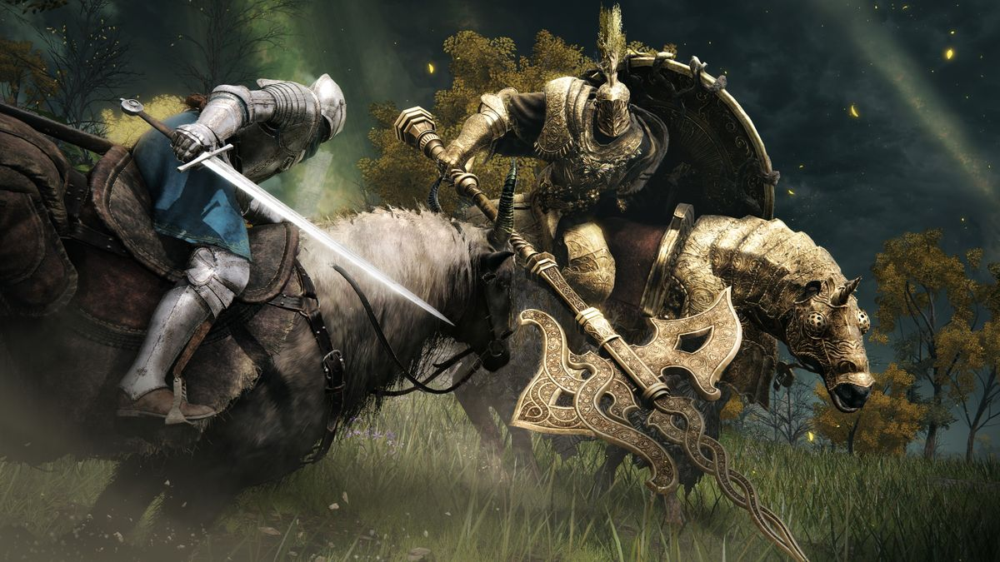

FEATURES
Open World
The open world of Elden Ring is vast and seamless, featuring diverse biomes and a dynamic day-night cycle that impact gameplay. With its expansive landscapes, interconnected regions, and environmental storytelling, the game encourages exploration and offers freedom in how players approach quests and challenges. Mounted combat further enhances traversal and engagement, creating a richly immersive experience.

Biomes
In Elden Ring, biomes play a crucial role in shaping the game’s immersive experience, offering a diverse array of environments that range from lush, verdant forests and sprawling plains to dark, foreboding swamps and rugged mountain ranges. Each biome is meticulously designed with its own distinct aesthetic, wildlife, and environmental challenges, contributing to a rich tapestry of exploration. These varied landscapes not only enhance visual and thematic variety but also influence gameplay, as different biomes present unique hazards and opportunities, encouraging players to adapt their strategies and fully engage with the game’s expansive world. This diversity in biomes enriches the exploration experience, making each new area feel like a fresh adventure.


Combat
Combat in Elden Ring is a dynamic and nuanced experience that blends FromSoftware’s signature mechanics with innovative elements. Players engage in combat using a diverse arsenal of weapons, magic, and abilities, allowing for a range of strategies from direct melee assaults to intricate spellcasting. The introduction of mounted combat adds a new layer of tactical depth, enabling players to fight while on horseback and navigate the expansive world more fluidly. Managing stamina and posture is crucial, as battles require a balance between offense and defense. The game features a wide variety of enemies and challenging bosses, each with unique attack patterns that demand precise timing and adaptability. This rich combat system rewards skillful play and strategic planning, making every encounter both challenging and rewarding.
Vastness
The vast and seamless world of Elden Ring stands out as a defining feature, offering an expansive, uninterrupted landscape that invites exploration and immersion. Unlike many traditional RPGs with segmented areas, Elden Ring presents a cohesive world where players can traverse from one region to another without loading screens or breaks in continuity. This expansive environment is filled with diverse biomes and hidden secrets, encouraging players to wander and discover its many facets at their own pace. The seamless design enhances the sense of scale and realism, making the world feel alive and interconnected, and allowing players to engage with its intricacies in a fluid and natural way.

Dynamic Elements
The dynamic elements in Elden Ring significantly enhance the gameplay experience by introducing a living, ever-changing world. The game features a dynamic day-night cycle and variable weather conditions that influence both the environment and gameplay. These changes can affect enemy behavior, visibility, and the availability of certain events or items, creating a world that feels responsive and alive. For instance, some enemies may become more aggressive or change their patrol patterns at night, while weather conditions like fog or rain can obscure vision or alter combat dynamics. This variability adds layers of depth and realism to the game, encouraging players to adapt their strategies and explore the world in different conditions to fully experience its rich, immersive environment.
Enviromental Storytelling
Environmental storytelling in Elden Ring enriches the game world with layers of depth and narrative through its meticulously crafted landscapes. The game's environments are not just backdrops but active storytellers, with ruins, landmarks, and relics that hint at the world’s history and lore. As players explore, they encounter remnants of past events, such as abandoned settlements, battle-scarred terrains, and enigmatic artifacts, each piece contributing to a larger, intricate narrative. This approach allows players to piece together the game’s rich backstory through exploration and observation, creating a sense of immersion and connection to the world that goes beyond traditional dialogue and cutscenes. The result is a more engaging and atmospheric experience, where the environment itself becomes a vital part of the storytelling.